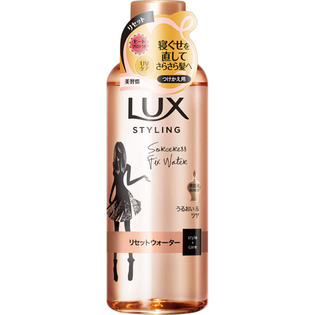

返回列表
产品名称：ラックス 美容液スタイリング リセットウォーター つけかえ用

ユニリーバ・ジャパン ラックス 美容液スタイリング リセットウォーター つけかえ用 １９０ｍｌ
メーカー ユニリーバ・ジャパン
JANコード 4902111736853
商品の特徴
寝ぐせを直してさらさら髪へ
ヒートプロテクト
UVケア
美習慣
美容液成分配合
うるおい＆ツヤ
成分・分量
水、エタノール、PEG/PPG-20/22ブチルエーテルジメチコン、ジグリセリン、ステアルトリモニウムクロリド、メトキシケイヒ酸エチルヘキシル、メドウフォーム-δ-ラクトン、イソプロパノール、香料
用法及び用量
つけかえ用ボトルのキャップをはずし、本品のスプレーをつけかえる。